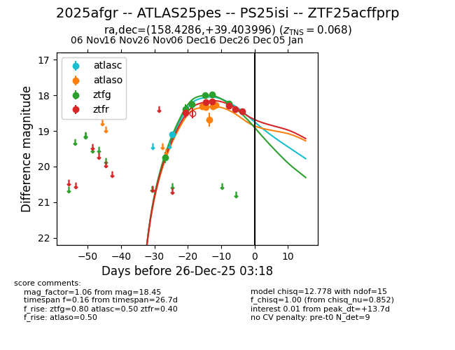
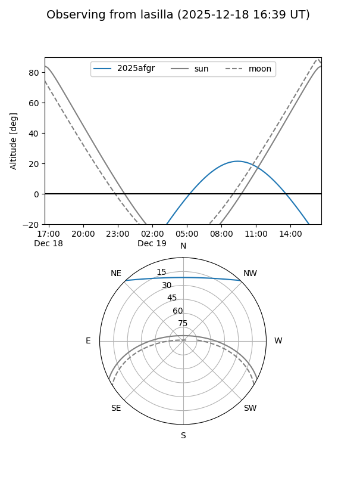
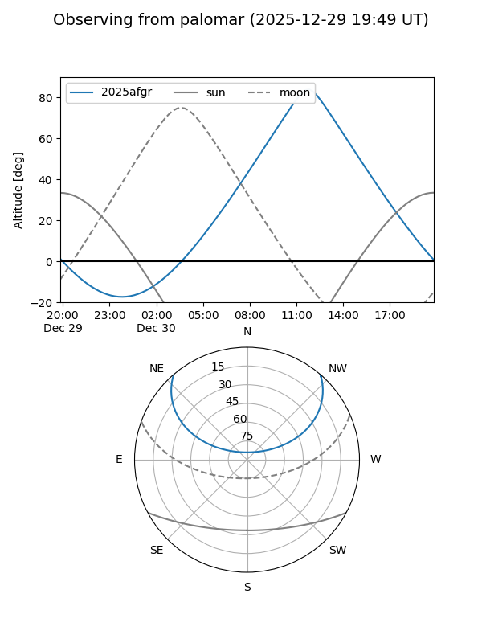
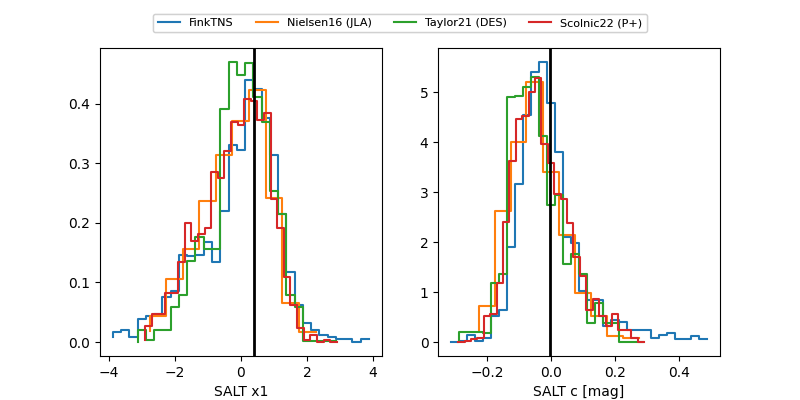

2025afgr
Target 2025afgr at 2025-12-26 15:36
Aliases and brokers:
FINK: fink-portal.org/ZTF25acffprp
Lasair: lasair-ztf.lsst.ac.uk/objects/ZTF25acffprp
ALeRCE: alerce.online/object/ZTF25acffprp
TNS: wis-tns.org/object/2025afgr
YSE: ziggy.ucolick.org/yse/transient_detail/2025afgr
alt names
ZTF25acffprp (ztf,fink_ztf)
2025afgr (tns,yse)
ATLAS25pes (atlas)
PS25isi (panstarrs)
Coordinates:
equatorial (ra, dec) = 158.4286,+39.40400
equatorial (HMS+DMS) = 10:33:42.87,+39:24:14.39
galactic (l, b) = (180.8052,+58.94358)
Flags:
confirmed ia
Photometry:
last atlasc=19.10, atlaso=18.28, ztfg=18.23, ztfr=18.45
1 atlasc, 5 atlaso, 6 ztfg, 6 ztfr detections
Lightcurve

Visibility


Additional plots
